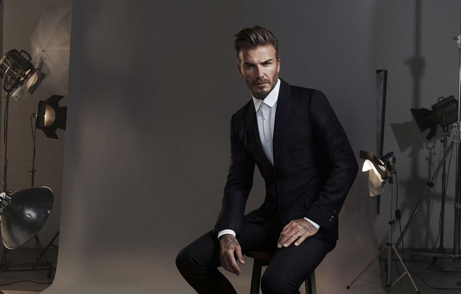
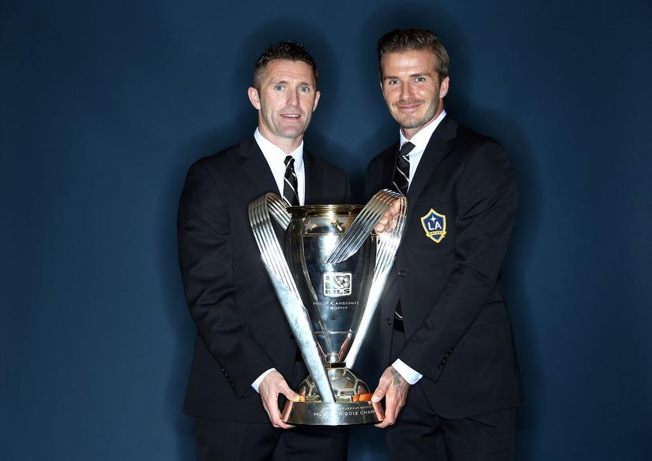

Beckham was born in Leytonstone, London, England.
He regularly played football in Ridgeway Park, Chingford, as a child, and attended Chase Lane Primary School and Chingford County High School. In a 2007 interview, Beckham said that, "At school whenever the teachers asked, 'What do you want to do when you're older?' I'd say, 'I want to be a footballer.' And they'd say, 'No, what do you really want to do, for a job?' But that was the only thing I ever wanted to do."
In his book Both Feet on the Ground, he stated that growing up he attended church every week with his parents, because that was the only way he could play football for their team.
Manchester United
Premier League (6): 1995–96, 1996–97, 1998–99, 1999–2000, 2000–01, 2002–03
FA Cup (2): 1995–96, 1998–99
La Liga (1): 2006–07
Supercopa de España (1): 2003
Los Angeles Galaxy[247]
MLS Cup (2): 2011, 2012MLS Cup (2): 2011, 2012
MLS Supporters' Shield (2): 2010, 2011
